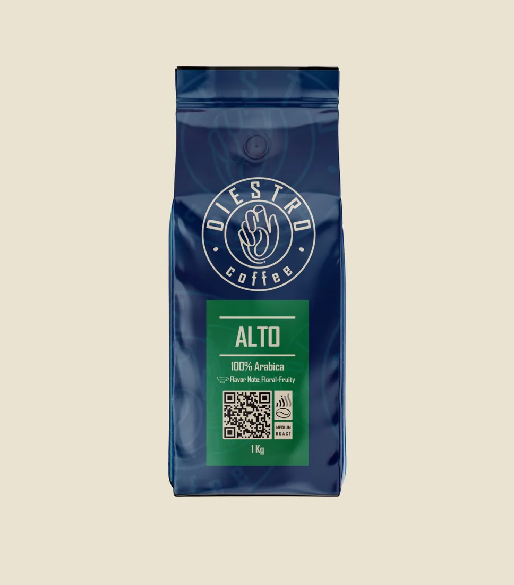
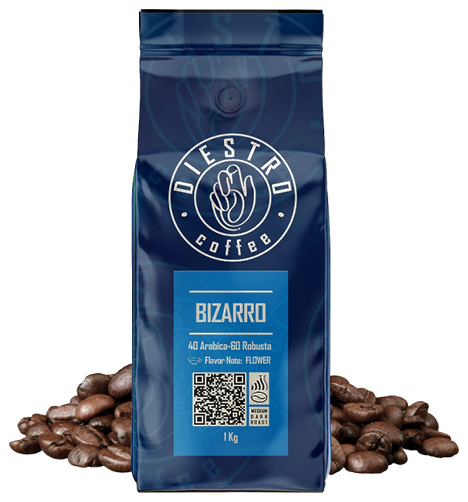
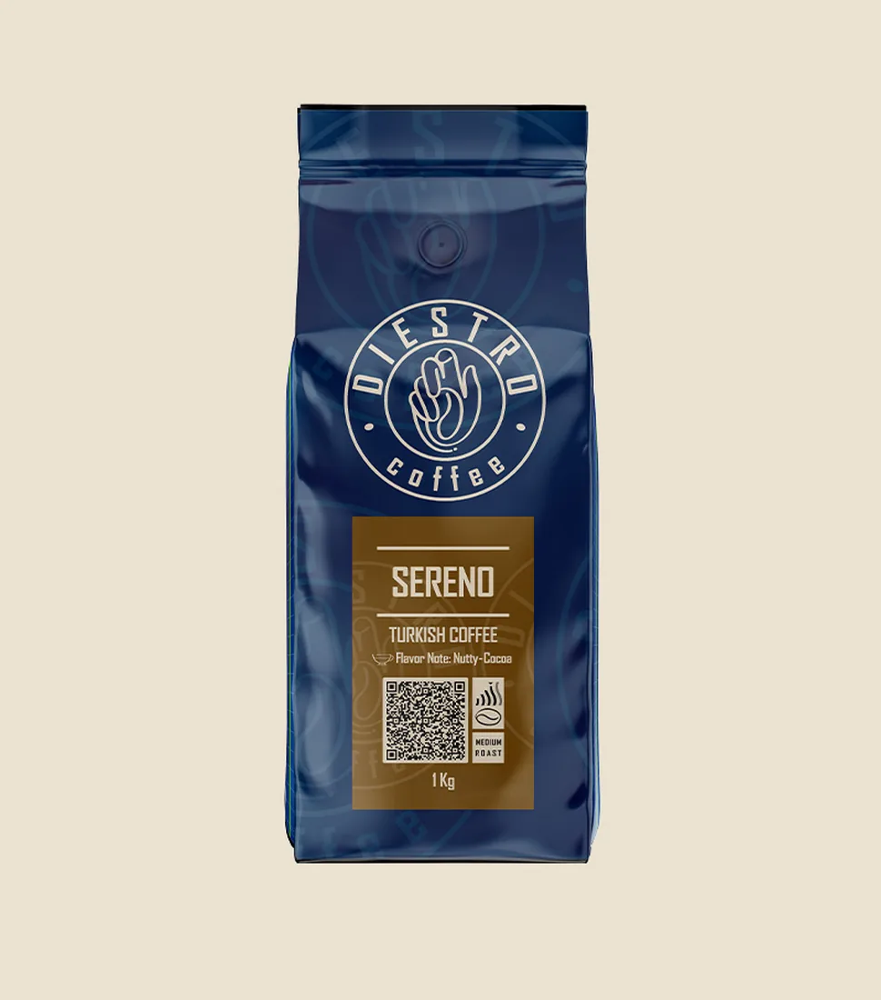
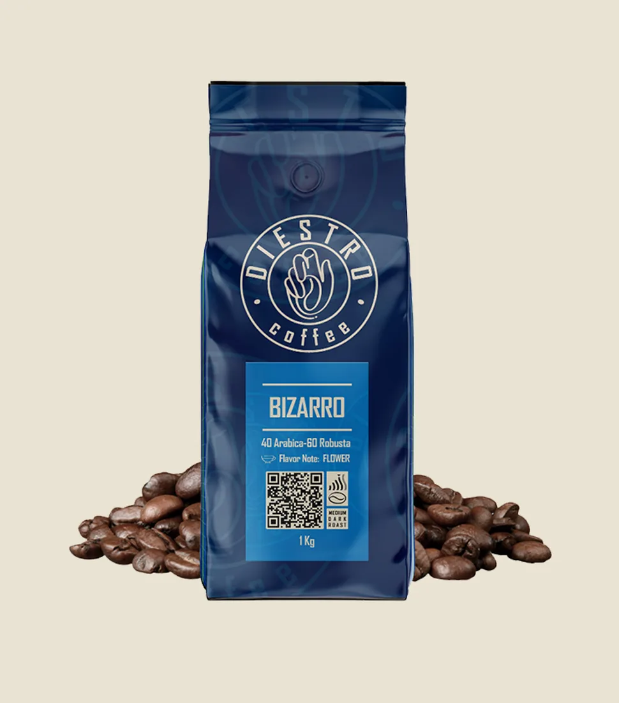
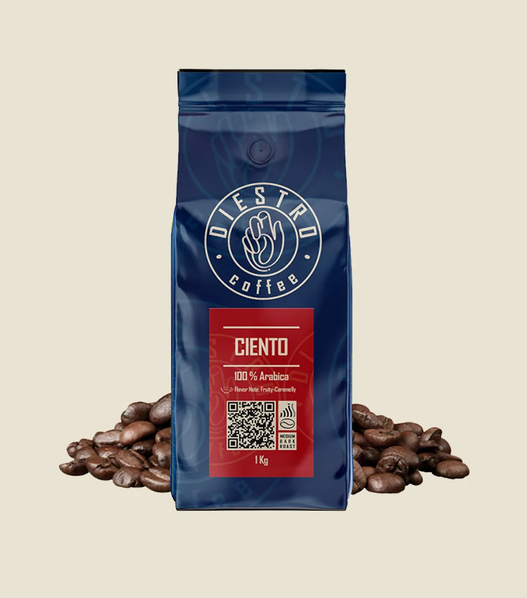
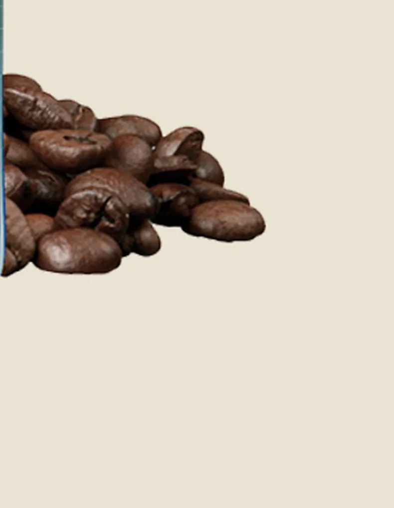

برشت متوسط

Alto
۱۰۰٪ عربیکا
نت طعمی: گلی – میوهایاز دانههای دستچینشده تا فنجان شما — با دستان ماهر، هر بار.

دانههای سبز و دستچینشده، آماده برشتهکاریاند.
حرارت بهآرامی بالا میرود؛ دانه رنگ عوض میکند.
اولین کرک شنیده میشود؛ عطر قهوه شکل میگیرد.
دستان ماهر، لحظه دقیق توقف برشت را تشخیص میدهند.
بستهبندی میشود و مستقیم به دست شما میرسد.
دانه سبز
چهار پروفایل طعمی متفاوت، از میان دانههای برشتهکاریشده دیسترو.

۱۰۰٪ عربیکا
نت طعمی: گلی – میوهای
قهوه ترک
نت طعمی: آجیلی – کاکائویی
۴۰٪ عربیکا – ۶۰٪ روبوستا
نت طعمی: گل
۱۰۰٪ عربیکا
نت طعمی: میوهای – کاراملی
دانههای ما از بهترین مزارع قهوه جهان دستچین میشوند؛ بر اساس پروفایل عطر و طعم انتخاب و به ایران میرسند. سپس متخصصان دیسترو، با دستان ماهر و ماشینآلات بهروز، دقیقترین میزان برشتهکاری را برای هر دانه اجرا میکنند — همانی که عطر و طعمش را تا لحظه رسیدن به فنجان شما حفظ میکند.
دو تجربه تازه در راه است تا انتخاب قهوه برای شما سادهتر و شخصیتر شود.
راهنمای تعاملی و زمانسنج واقعی برای دمآوری دقیق، متناسب با روش و ابزار شما.
سفارشهای خود را ذخیره کنید، سلیقهتان را بشناسید و برای خرید دوباره پاداش بگیرید.